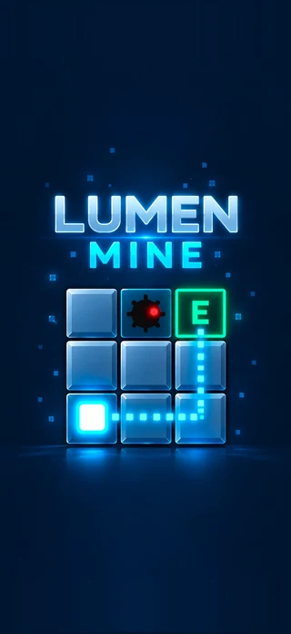
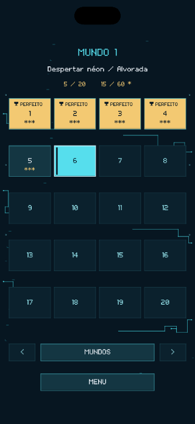
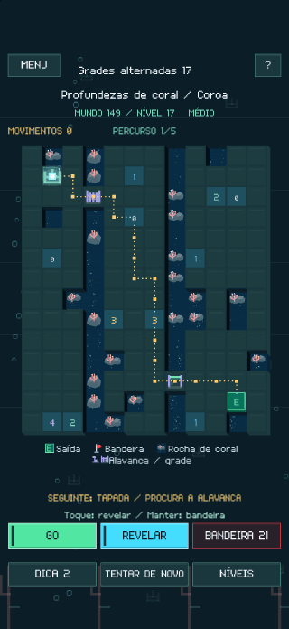
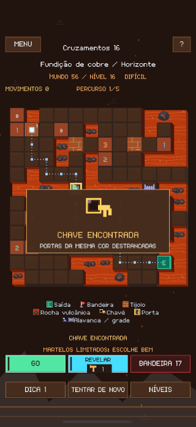
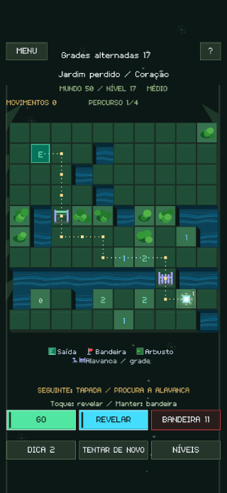
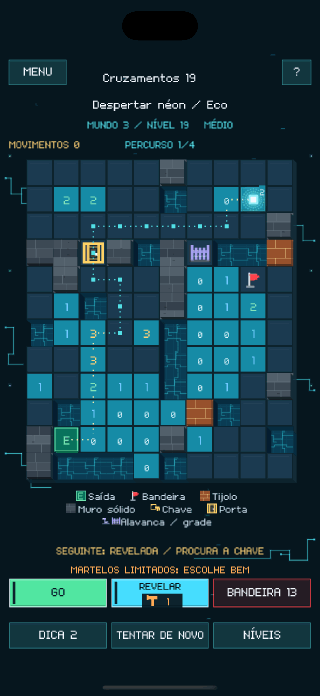
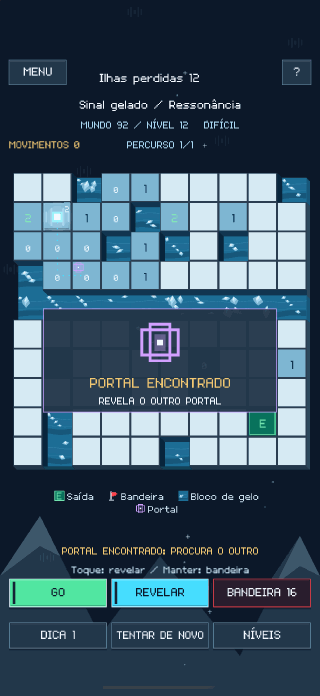
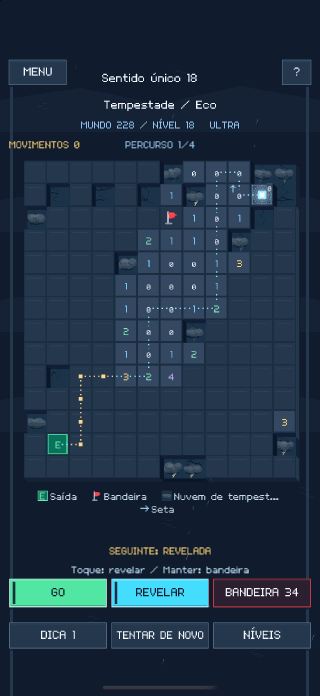
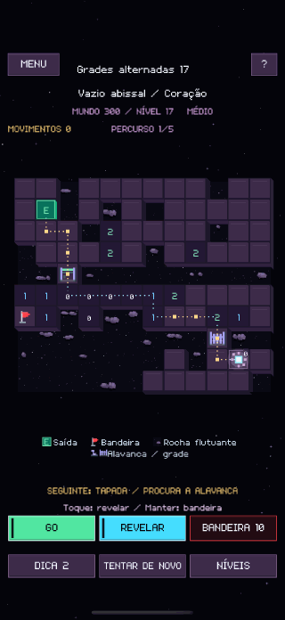

Cada casa muda o percurso.
Revela uma casa para ler a pista. Assinala as minas com bandeiras e prime GO para mover a luz. GO END leva-a até à saída quando já revelaste um caminho seguro.
LUMEN MINE
Lê os números, assinala as minas e revela um caminho seguro até à saída. Tu preparas o caminho. A luz segue-o.
Revela uma casa para ler a pista. Assinala as minas com bandeiras e prime GO para mover a luz. GO END leva-a até à saída quando já revelaste um caminho seguro.
Parte tijolos com um número limitado de martelos, abre portas, aciona alavancas e atravessa portais. Usar uma chave numa porta pode deixar a outra trancada.
Podes chegar à saída sem revelar todo o tabuleiro. Resolve uma parte maior do tabuleiro para obter um resultado perfeito e ganhar estrelas.









Explora gratuitamente os três primeiros mundos. Uma única compra na aplicação desbloqueia o jogo completo, com 300 mundos e 6 000 puzzles no total.